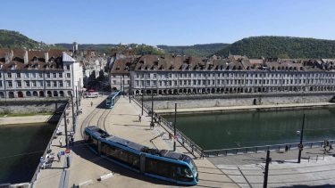
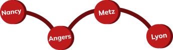

Amongst the cities, on a national scale, many are starting to react to climate change by putting in place more and more infrastructure or other projects that are "environment friendly". One example is the city of Paris, which is promoting the use of bicycles by creating cycle lanes to encourage people to travel by bicycle rather than by car, and also to relieve the city of its huge traffic jams.
Among these cities, one that caught our attention was Besançon.

What is Besançon?
It is the capital of the Doubs, a department of the Bourgogne Franche-Comté region, formerly Franche-Comté alone. Besançonis a municipality of 118,647 inhabitantsIt is located in the east of France. It is the seat of the Burgundy Franche-Comté region. It is also the capital of the historical and cultural region of Franche-Comté. The inhabitants are called Bisontins,"we are either bisontin or we are notis the anthem that runs among the inhabitants.
Many things can be found, notably large concert halls (La Rodia) or large exhibition (Micropolis) or sports complexes (La Malcombe, Léo Lagrange)
However, if you want to visit the city, we refer you to the website of Besançon

The city at the heart of evolution
Clean development is one of the city's policies, and one of the reasons for this is an important commitment: environment, biodiversity, energy, climate, water, waste, mobility...
Many ideas & projects are put in place to show the evolution of other cities. eco-engaged trade, the eco-citizen route but also the sustainable neighbourhood development.
The city is putting in place many ways to evolve without polluting more! People have understood the stakes of their actions, among the things put in place, we find the public transport. From trams,manybusorbicycles are set up in the city in order to reduce the use of the car and thus decrease ecological impact.
Unfortunately, too many cities tend to let this fight for ecology, for the environment, to save the planet, go by the wayside, but there are still some cities that are making an effort and that's great!

Frieze of similar places
The different cities are displayed below as a frieze.

For more information,
Rankings of green cities in France :
Next article: "Save the planet